870 observation with 36 variables
library(knitr)
library(tidyverse)
library(readxl)
library(curl)
library(GGally)
library(e1071)
library(caret)
library(ggcorrplot)
library(gridExtra)
library(reticulate)
library(gt)
data <-read.csv(curl("https://raw.githubusercontent.com/Scottdyl/CaseStudy2DDS/main/data/CaseStudy2-data.csv"))
#summary(data)
#no missing values found
#convert raw data variables to factors
data$Education = as.factor(data$Education)
data$EnvironmentSatisfaction = as.factor(data$EnvironmentSatisfaction)
data$JobInvolvement = as.factor(data$JobInvolvement)
data$JobLevel = as.factor(data$JobLevel)
data$JobSatisfaction = as.factor(data$JobSatisfaction)
data$PerformanceRating = as.factor(data$PerformanceRating)
data$RelationshipSatisfaction = as.factor(data$RelationshipSatisfaction)
data$WorkLifeBalance = as.factor(data$WorkLifeBalance)
# no attr data
Comp_attr <- read.csv(curl("https://raw.githubusercontent.com/Scottdyl/CaseStudy2DDS/main/data/CaseStudy2CompSet%20No%20Attrition.csv"))
Comp_attr$Education = as.factor(Comp_attr$Education)
Comp_attr$EnvironmentSatisfaction = as.factor(Comp_attr$EnvironmentSatisfaction)
Comp_attr$JobInvolvement = as.factor(Comp_attr$JobInvolvement)
Comp_attr$JobLevel = as.factor(Comp_attr$JobLevel)
Comp_attr$JobSatisfaction = as.factor(Comp_attr$JobSatisfaction)
Comp_attr$PerformanceRating = as.factor(Comp_attr$PerformanceRating)
Comp_attr$RelationshipSatisfaction = as.factor(Comp_attr$RelationshipSatisfaction)
Comp_attr$WorkLifeBalance = as.factor(Comp_attr$WorkLifeBalance)
# no sal data
Comp_sal <-read.csv(curl("https://raw.githubusercontent.com/Scottdyl/CaseStudy2DDS/main/data/CaseStudy2CompSet%20No%20Salary.csv"))
Comp_sal$Education = as.factor(Comp_sal$Education)
Comp_sal$EnvironmentSatisfaction = as.factor(Comp_sal$EnvironmentSatisfaction)
Comp_sal$JobInvolvement = as.factor(Comp_sal$JobInvolvement)
Comp_sal$JobLevel = as.factor(Comp_sal$JobLevel)
Comp_sal$JobSatisfaction = as.factor(Comp_sal$JobSatisfaction)
Comp_sal$PerformanceRating = as.factor(Comp_sal$PerformanceRating)
Comp_sal$RelationshipSatisfaction = as.factor(Comp_sal$RelationshipSatisfaction)
Comp_sal$WorkLifeBalance = as.factor(Comp_sal$WorkLifeBalance)
head(data)## ID Age Attrition BusinessTravel DailyRate Department DistanceFromHome Education EducationField
## 1 1 32 No Travel_Rarely 117 Sales 13 4 Life Sciences
## 2 2 40 No Travel_Rarely 1308 Research & Development 14 3 Medical
## 3 3 35 No Travel_Frequently 200 Research & Development 18 2 Life Sciences
## 4 4 32 No Travel_Rarely 801 Sales 1 4 Marketing
## 5 5 24 No Travel_Frequently 567 Research & Development 2 1 Technical Degree
## 6 6 27 No Travel_Frequently 294 Research & Development 10 2 Life Sciences
## EmployeeCount EmployeeNumber EnvironmentSatisfaction Gender HourlyRate JobInvolvement JobLevel
## 1 1 859 2 Male 73 3 2
## 2 1 1128 3 Male 44 2 5
## 3 1 1412 3 Male 60 3 3
## 4 1 2016 3 Female 48 3 3
## 5 1 1646 1 Female 32 3 1
## 6 1 733 4 Male 32 3 3
## JobRole JobSatisfaction MaritalStatus MonthlyIncome MonthlyRate NumCompaniesWorked Over18 OverTime
## 1 Sales Executive 4 Divorced 4403 9250 2 Y No
## 2 Research Director 3 Single 19626 17544 1 Y No
## 3 Manufacturing Director 4 Single 9362 19944 2 Y No
## 4 Sales Executive 4 Married 10422 24032 1 Y No
## 5 Research Scientist 4 Single 3760 17218 1 Y Yes
## 6 Manufacturing Director 1 Divorced 8793 4809 1 Y No
## PercentSalaryHike PerformanceRating RelationshipSatisfaction StandardHours StockOptionLevel TotalWorkingYears
## 1 11 3 3 80 1 8
## 2 14 3 1 80 0 21
## 3 11 3 3 80 0 10
## 4 19 3 3 80 2 14
## 5 13 3 3 80 0 6
## 6 21 4 3 80 2 9
## TrainingTimesLastYear WorkLifeBalance YearsAtCompany YearsInCurrentRole YearsSinceLastPromotion
## 1 3 2 5 2 0
## 2 2 4 20 7 4
## 3 2 3 2 2 2
## 4 3 3 14 10 5
## 5 2 3 6 3 1
## 6 4 2 9 7 1
## YearsWithCurrManager
## 1 3
## 2 9
## 3 2
## 4 7
## 5 3
## 6 7#commented out least impactful looking varables
#data %>% ggplot(aes(Age))+geom_density(aes(fill=Attrition))
#data %>% ggplot(aes(YearsSinceLastPromotion))+geom_density(aes(fill=Attrition))
#data %>% ggplot(aes(TrainingTimesLastYear))+geom_density(aes(fill=Attrition))
#data %>% ggplot(aes(StockOptionLevel))+geom_density(aes(fill=Attrition))
#data %>% ggplot(aes(PercentSalaryHike))+geom_density(aes(fill=Attrition))
#data %>% ggplot(aes(NumCompaniesWorked))+geom_density(aes(fill=Attrition))
#data %>% ggplot(aes(MonthlyRate))+geom_density(aes(fill=Attrition))
#data %>% ggplot(aes(HourlyRate))+geom_density(aes(fill=Attrition))
#data %>% ggplot(aes(DailyRate))+geom_density(aes(fill=Attrition))
#data %>% ggplot(aes(DistanceFromHome))+geom_density(aes(fill=Attrition))#summary(as.matrix(data))
corr_data_y <- data %>% filter(Attrition =="Yes") %>% select(Age, TotalWorkingYears, YearsAtCompany, YearsSinceLastPromotion, YearsInCurrentRole, YearsWithCurrManager, MonthlyIncome,TrainingTimesLastYear,StockOptionLevel,PercentSalaryHike,NumCompaniesWorked,DistanceFromHome)
corr <- round(cor(corr_data_y),1)
ggcorrplot(corr, hc.order = TRUE,
type = "lower",
lab = TRUE,
lab_size = 3,
method="circle",
colors = c("red", "white", "springgreen3"),
title="Continuous Variables with Attrition",
ggtheme=theme_bw)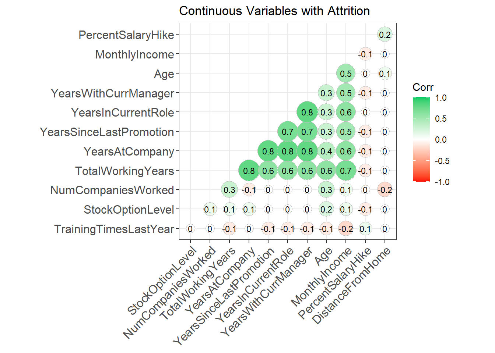
corr_data_n <- data %>% filter(Attrition =="No") %>% select(Age, TotalWorkingYears, YearsAtCompany, YearsSinceLastPromotion, YearsInCurrentRole, YearsWithCurrManager, MonthlyIncome,TrainingTimesLastYear,StockOptionLevel,PercentSalaryHike,NumCompaniesWorked,DistanceFromHome)
corr <- round(cor(corr_data_n),1)
ggcorrplot(corr, hc.order = TRUE,
type = "lower",
lab = TRUE,
lab_size = 3,
method="circle",
colors = c("red", "white", "springgreen3"),
title="Continuous Variables without Attrition",
ggtheme=theme_bw)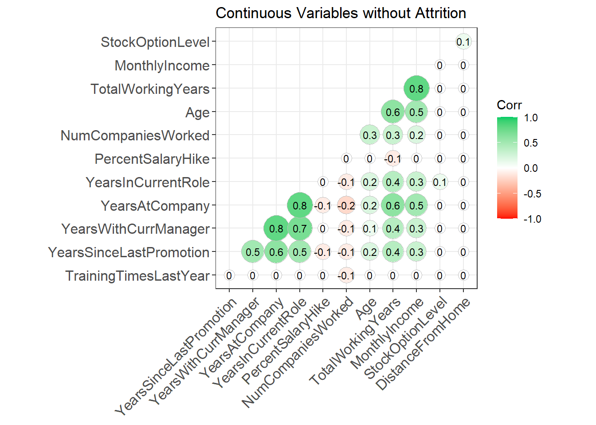 ## TTest - testing the 5 most significant varables
# we will be using a T test here because we would like to know: does this variable lead to a difference in attrition?
# if we have a samll P value that means this varable does show a difference in means betwwen attrition and not.
att_mi <- data %>% filter(Attrition=="Yes") %>% select(MonthlyIncome)
stay_mi <- data %>% filter(Attrition=="No") %>% select(MonthlyIncome)
mi_t <-t.test(att_mi, stay_mi, alternative="two.sided")
att_twy <- data %>% filter(Attrition=="Yes") %>% select(TotalWorkingYears)
stay_twy <- data %>% filter(Attrition=="No") %>% select(TotalWorkingYears)
twy_t <-t.test(att_twy, stay_twy, alternative="two.sided")
att_yicr <- data %>% filter(Attrition=="Yes") %>% select(YearsInCurrentRole)
stay_yicr <- data %>% filter(Attrition=="No") %>% select(YearsInCurrentRole)
yicr <- t.test(att_yicr, stay_yicr, alternative="two.sided")
att_ywcm <- data %>% filter(Attrition=="Yes") %>% select(YearsWithCurrManager)
stay_ywcm <- data %>% filter(Attrition=="No") %>% select(YearsWithCurrManager)
ywcm <- t.test(att_ywcm, stay_ywcm, alternative="two.sided")
att_yac <- data %>% filter(Attrition=="Yes") %>% select(YearsAtCompany)
stay_yac <- data %>% filter(Attrition=="No") %>% select(YearsAtCompany)
yac <- t.test(att_yac, stay_yac, alternative="two.sided")
cont_var = c("MonthlyIncome", "TotalWorkingYears","YearsInCurrentRole","YearsWithCurrManager","YearsAtCompany")
ttest_p = c(mi_t$p.value, twy_t$p.value, yicr$p.value, ywcm$p.value, yac$p.value)
df1_ttest = data.frame(Variable=cont_var, "T-Test pvalue"=ttest_p)
gt(df1_ttest)| Variable | T.Test.pvalue |
|---|---|
| MonthlyIncome | 2.412488e-07 |
| TotalWorkingYears | 6.595682e-07 |
| YearsInCurrentRole | 1.522152e-06 |
| YearsWithCurrManager | 5.084229e-06 |
| YearsAtCompany | 2.563021e-04 |
df1_ttest## Variable T.Test.pvalue
## 1 MonthlyIncome 2.412488e-07
## 2 TotalWorkingYears 6.595682e-07
## 3 YearsInCurrentRole 1.522152e-06
## 4 YearsWithCurrManager 5.084229e-06
## 5 YearsAtCompany 2.563021e-04#these varables appear to be significant
mi_plot <-data %>% ggplot(aes(MonthlyIncome))+
geom_density(aes(fill=Attrition))+
labs(title="Monthly Income vs Attrition")+
xlab("Monthly Income")
twy_plot <-data %>% ggplot(aes(TotalWorkingYears))+
geom_density(aes(fill=Attrition))+
labs(title="Total Working Years vs Attrition")+
xlab("Total Working Years")
yac_plot <- data %>% ggplot(aes(YearsAtCompany))+
geom_density(aes(fill=Attrition))+
labs(title="Years At the Company vs Attrition")+
xlab("Years at the Company")
yicr_plot <- data %>% ggplot(aes(YearsInCurrentRole))+
geom_density(aes(fill=Attrition))+
labs(title="Years In Current Role vs Attrition")+
xlab("Years in Current Role")
ywcm_plot <- data %>% ggplot(aes(YearsWithCurrManager))+
geom_density(aes(fill=Attrition))+
labs(title="Years With Current Manager vs Attrition")+
xlab("Years with Current Manager")
grid.arrange(mi_plot,twy_plot,yac_plot,yicr_plot,ywcm_plot)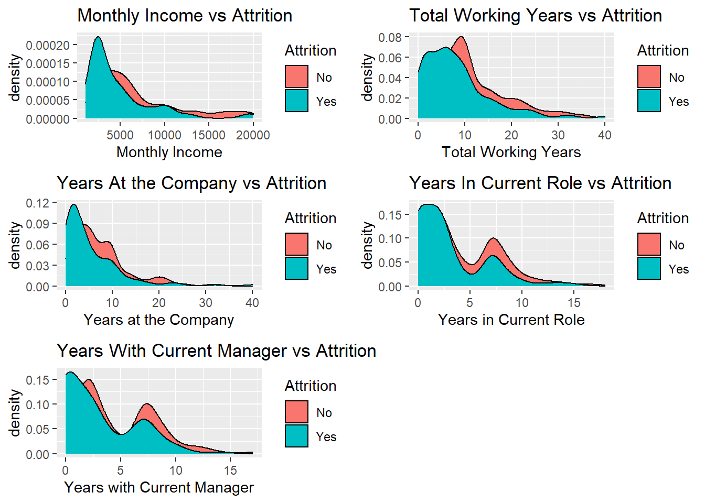
# show both density and box charts# show the same data as above but in boxplot
mi_plot_box <-data %>% ggplot(aes(MonthlyIncome))+
geom_boxplot(aes(fill=Attrition))+
labs(title="Monthly Income vs Attrition")+
xlab("Monthly Income")
twy_plot_box <-data %>% ggplot(aes(TotalWorkingYears))+
geom_boxplot(aes(fill=Attrition))+
labs(title="Total Working Years vs Attrition")+
xlab("Total Working Years")
yac_plot_box <- data %>% ggplot(aes(YearsAtCompany))+
geom_boxplot(aes(fill=Attrition))+
labs(title="Years At the Company vs Attrition")+
xlab("Years at the COmpany")
yicr_plot_box <- data %>% ggplot(aes(YearsInCurrentRole))+
geom_boxplot(aes(fill=Attrition))+
labs(title="Years In Current Role vs Attrition")+
xlab("Years in Current Role")
ywcm_plot_box <- data %>% ggplot(aes(YearsWithCurrManager))+
geom_boxplot(aes(fill=Attrition))+
labs(title="Years With Current Manager vs Attrition")+
xlab("Years with Current Manager")
grid.arrange(mi_plot_box,twy_plot_box,yac_plot_box,yicr_plot_box,ywcm_plot_box)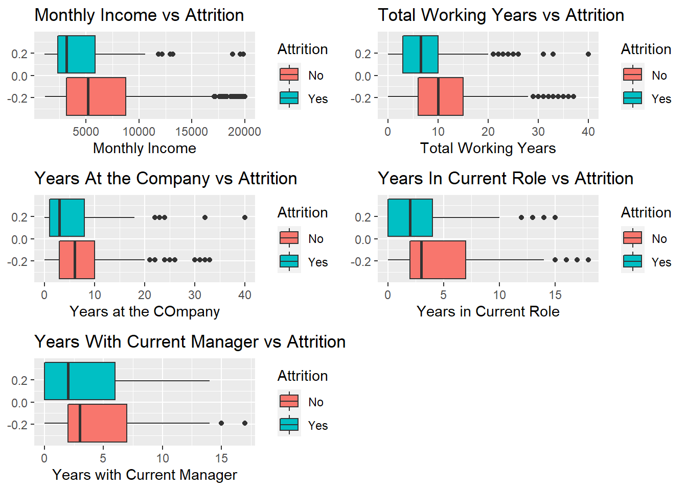
#data %>% group_by(PerformanceRating) %>% count(Attrition) %>% mutate(sum=sum(n)) %>% mutate(proportion=n/sum*100) %>% filter(Attrition=="Yes")
#data %>% group_by(RelationshipSatisfaction) %>% count(Attrition) %>% mutate(sum=sum(n)) %>% mutate(proportion=n/sum*100) %>% filter(Attrition=="Yes")
#data %>% group_by(Education) %>% count(Attrition) %>% mutate(sum=sum(n)) %>% mutate(proportion=n/sum*100) %>% filter(Attrition=="Yes")
#data %>% group_by(EducationField) %>% count(Attrition) %>% mutate(sum=sum(n)) %>% mutate(proportion=n/sum*100) %>% filter(Attrition=="Yes")
#data %>% group_by(Gender) %>% count(Attrition) %>% mutate(sum=sum(n)) %>% mutate(proportion=n/sum*100) %>% filter(Attrition=="Yes")
#data %>% group_by(BusinessTravel) %>% count(Attrition) %>% mutate(sum=sum(n)) %>% mutate(proportion=n/sum*100) %>% filter(Attrition=="Yes")
#data %>% group_by(Department) %>% count(Attrition) %>% mutate(sum=sum(n)) %>% mutate(proportion=n/sum*100) %>% filter(Attrition=="Yes")
#data %>% group_by(WorkLifeBalance) %>% count(Attrition) %>% mutate(sum=sum(n)) %>% mutate(proportion=n/sum*100) %>% filter(Attrition=="Yes")
#data %>% group_by(JobSatisfaction) %>% count(Attrition) %>% mutate(sum=sum(n)) %>% mutate(proportion=n/sum*100) %>% filter(Attrition=="Yes")data %>% group_by(JobLevel) %>%
count(Attrition) %>%
mutate(sum=sum(n)) %>%
mutate(proportion=n/sum*100) %>%
filter(Attrition=="Yes")## # A tibble: 5 x 5
## # Groups: JobLevel [5]
## JobLevel Attrition n sum proportion
## <fct> <chr> <int> <int> <dbl>
## 1 1 Yes 86 329 26.1
## 2 2 Yes 30 312 9.62
## 3 3 Yes 17 132 12.9
## 4 4 Yes 3 60 5
## 5 5 Yes 4 37 10.8data %>% group_by(OverTime) %>%
count(Attrition) %>%
mutate(sum=sum(n)) %>%
mutate(proportion=n/sum*100) %>%
filter(Attrition=="Yes")## # A tibble: 2 x 5
## # Groups: OverTime [2]
## OverTime Attrition n sum proportion
## <chr> <chr> <int> <int> <dbl>
## 1 No Yes 60 618 9.71
## 2 Yes Yes 80 252 31.7data %>% group_by(JobInvolvement) %>%
count(Attrition) %>%
mutate(sum=sum(n)) %>%
mutate(proportion=n/sum*100) %>%
filter(Attrition=="Yes")## # A tibble: 4 x 5
## # Groups: JobInvolvement [4]
## JobInvolvement Attrition n sum proportion
## <fct> <chr> <int> <int> <dbl>
## 1 1 Yes 22 47 46.8
## 2 2 Yes 44 228 19.3
## 3 3 Yes 67 514 13.0
## 4 4 Yes 7 81 8.64data %>% group_by(JobRole) %>%
count(Attrition) %>%
mutate(sum=sum(n)) %>%
mutate(proportion=n/sum*100) %>%
filter(Attrition=="Yes")## # A tibble: 9 x 5
## # Groups: JobRole [9]
## JobRole Attrition n sum proportion
## <chr> <chr> <int> <int> <dbl>
## 1 Healthcare Representative Yes 8 76 10.5
## 2 Human Resources Yes 6 27 22.2
## 3 Laboratory Technician Yes 30 153 19.6
## 4 Manager Yes 4 51 7.84
## 5 Manufacturing Director Yes 2 87 2.30
## 6 Research Director Yes 1 51 1.96
## 7 Research Scientist Yes 32 172 18.6
## 8 Sales Executive Yes 33 200 16.5
## 9 Sales Representative Yes 24 53 45.3data %>% group_by(MaritalStatus) %>%
count(Attrition) %>%
mutate(sum=sum(n)) %>%
mutate(proportion=n/sum*100) %>%
filter(Attrition=="Yes")## # A tibble: 3 x 5
## # Groups: MaritalStatus [3]
## MaritalStatus Attrition n sum proportion
## <chr> <chr> <int> <int> <dbl>
## 1 Divorced Yes 12 191 6.28
## 2 Married Yes 58 410 14.1
## 3 Single Yes 70 269 26.0library(patchwork)
JL_chi <- chisq.test(data$JobLevel, data$Attrition)
O_chi <- chisq.test(data$OverTime, data$Attrition)
JI_chi <- chisq.test(data$JobInvolvement, data$Attrition)
JR_chi <- chisq.test(data$JobRole, data$Attrition)## Warning in chisq.test(data$JobRole, data$Attrition): Chi-squared approximation may be incorrectMS_chi <- chisq.test(data$MaritalStatus, data$Attrition)
cat_var = c("JobLevel", "OverTime", "JobInvolvement", "JobRole", "MaritalStatus")
chi_p = c(JL_chi$p.value, O_chi$p.value, JI_chi$p.value, JR_chi$p.value, MS_chi$p.value)
df_chitest = data.frame(Variable=cat_var, Chisq.pvalue=chi_p)
JL_plot <- data %>% ggplot(aes(JobLevel))+geom_bar(aes(fill=Attrition)) + labs(title="JobLevel vs Attrition")+coord_flip()
O_plot <- data %>% ggplot(aes(OverTime))+geom_bar(aes(fill=Attrition)) + labs(title="Overtime vs Attrition")+coord_flip()
JI_plot <- data %>% ggplot(aes(JobInvolvement))+geom_bar(aes(fill=Attrition)) + labs(title="JobInvolvement vs Attrition")+coord_flip()
JS_plot <- data %>% ggplot(aes(JobSatisfaction))+geom_bar(aes(fill=Attrition)) + labs(title="JobSatisfaction vs Attrition")+coord_flip()
JR_plot <-data %>% ggplot(aes(JobRole))+geom_bar(aes(fill=Attrition)) + labs(title="JobRole vs Attrition")+ coord_flip()+ theme(axis.text.x = element_text(angle = 35))+ theme(axis.text.y = element_text(vjust = .5,hjust = 1))
MS_plot <- data %>% ggplot(aes(MaritalStatus))+geom_bar(aes(fill=Attrition)) + labs(title="MaritalStatus vs Attrition")+coord_flip()
#Chi square test to determine correlation
JL_chi <- chisq.test(data$JobLevel, data$Attrition)
O_chi <- chisq.test(data$OverTime, data$Attrition)
JI_chi <- chisq.test(data$JobInvolvement, data$Attrition)
JR_chi <- chisq.test(data$JobRole, data$Attrition)## Warning in chisq.test(data$JobRole, data$Attrition): Chi-squared approximation may be incorrectMS_chi <- chisq.test(data$MaritalStatus, data$Attrition)
cat_var = c("JobLevel", "OverTime", "JobInvolvement", "JobRole", "MaritalStatus")
chi_p = c(JL_chi$p.value, O_chi$p.value, JI_chi$p.value, JR_chi$p.value, MS_chi$p.value)
df_chitest = data.frame(Variable=cat_var, Chisq.pvalue=chi_p)
JR_plot+(JL_plot+ O_plot)+ (JI_plot+MS_plot)+ plot_layout(ncol = 1)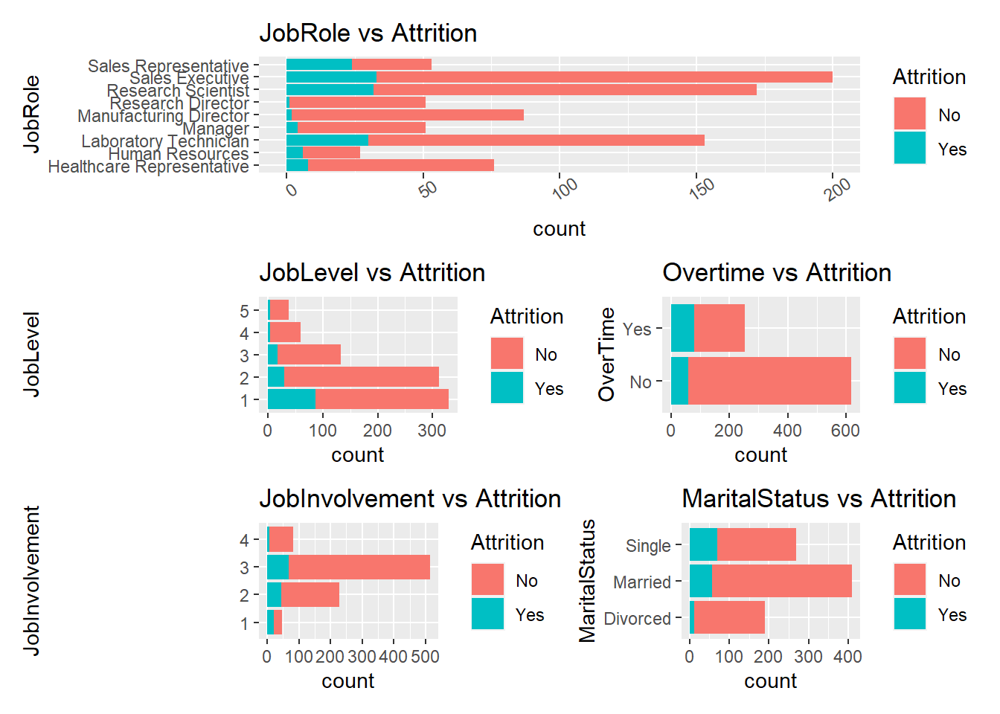
#grid.arrange(JL_plot, O_plot, JI_plot, JR_plot, MS_plot,
# widths = c(1,1,1),c(1,1,1),layout_matrix = rbind(c(1, 2, 3))),c(4,5,5)))
df_chitest## Variable Chisq.pvalue
## 1 JobLevel 2.084703e-08
## 2 OverTime 2.332981e-15
## 3 JobInvolvement 5.211041e-09
## 4 JobRole 3.646836e-10
## 5 MaritalStatus 3.378946e-08##NaiveBayes variables were:
* OverTime
* JobRole
* JobInvolvement
* MonthlyIncome
* TotalWorkingYears
* YearsInCurrentRole
* JobLevel
# Goal: reach a sensitivity and specificty greater than 60%
# add varables one by one until a desiered result is acheived
set.seed(12)
splitPerc = .75
trainindex = sample(seq(1,dim(data)[1],1), round(splitPerc*dim(data)[1]))
trainIndices = sample(seq(1,dim(data)[1],1),round(splitPerc * dim(data)[1]))
train = data[trainindex,]
test = data[-trainindex,]
#note it is illegal to know about relationship status when interviewing
m = naiveBayes(Attrition~OverTime+JobRole+JobInvolvement+MonthlyIncome+TotalWorkingYears+JobLevel,data=train)
table(predict(m, newdata=test),test$Attrition)##
## No Yes
## No 176 11
## Yes 13 18CM = confusionMatrix(table(predict(m, newdata=test),test$Attrition))
CM## Confusion Matrix and Statistics
##
##
## No Yes
## No 176 11
## Yes 13 18
##
## Accuracy : 0.8899
## 95% CI : (0.8406, 0.9282)
## No Information Rate : 0.867
## P-Value [Acc > NIR] : 0.1859
##
## Kappa : 0.5363
##
## Mcnemar's Test P-Value : 0.8383
##
## Sensitivity : 0.9312
## Specificity : 0.6207
## Pos Pred Value : 0.9412
## Neg Pred Value : 0.5806
## Prevalence : 0.8670
## Detection Rate : 0.8073
## Detection Prevalence : 0.8578
## Balanced Accuracy : 0.7760
##
## 'Positive' Class : No
## #grid.arrange(O_plot, JR_plot,JI_plot, mi_plot, twy_plot,yicr_plot,JL_plot)
comp_NB = naiveBayes(Attrition~OverTime+MonthlyIncome+JobRole+TotalWorkingYears+JobInvolvement+JobLevel,data=data)
pred_att = data.frame(Attrition =predict(comp_NB, newdata=Comp_attr))
att_comp <-bind_cols(Comp_attr,pred_att)
JR_plot+ (O_plot +JI_plot)+ plot_layout(ncol = 1)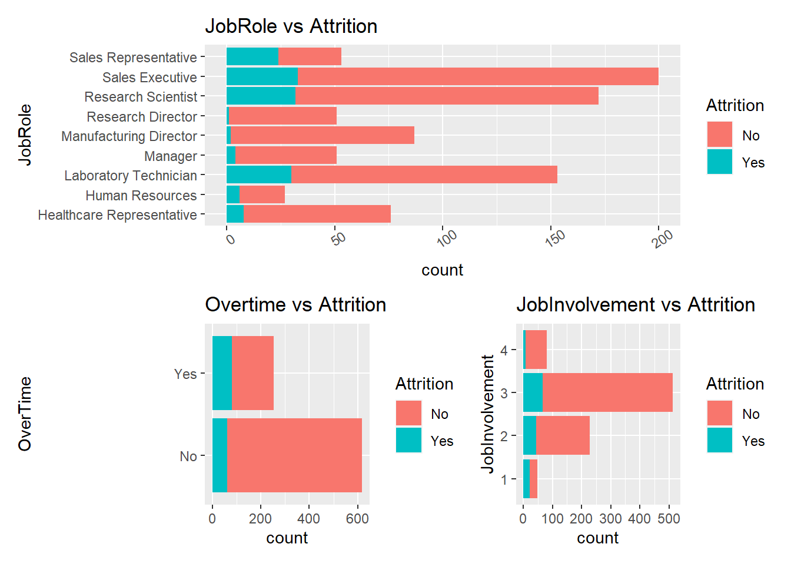
(mi_plot_box+ twy_plot_box)+(JL_plot)+ plot_layout(ncol = 1)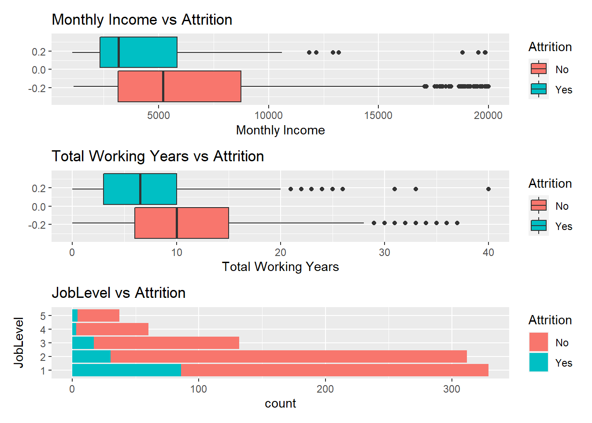
#this meets out goal but we could do better. It is dependent on the seed
#summary(att_comp)
#write.csv(select(att_comp,ID,Attrition),file="Case2Predictions_Scott_Attrition.csv")#Variables such as TotalWorkingYears, YearsAtCompany, YearsInCurrentRole, YearsSinceLastPromotion and YearsWithCurrentManager are highly corelated to each other.
# removed from the model due to colinearity. Left total working years
set.seed(12)
splitPerc = .75
head(data)## ID Age Attrition BusinessTravel DailyRate Department DistanceFromHome Education EducationField
## 1 1 32 No Travel_Rarely 117 Sales 13 4 Life Sciences
## 2 2 40 No Travel_Rarely 1308 Research & Development 14 3 Medical
## 3 3 35 No Travel_Frequently 200 Research & Development 18 2 Life Sciences
## 4 4 32 No Travel_Rarely 801 Sales 1 4 Marketing
## 5 5 24 No Travel_Frequently 567 Research & Development 2 1 Technical Degree
## 6 6 27 No Travel_Frequently 294 Research & Development 10 2 Life Sciences
## EmployeeCount EmployeeNumber EnvironmentSatisfaction Gender HourlyRate JobInvolvement JobLevel
## 1 1 859 2 Male 73 3 2
## 2 1 1128 3 Male 44 2 5
## 3 1 1412 3 Male 60 3 3
## 4 1 2016 3 Female 48 3 3
## 5 1 1646 1 Female 32 3 1
## 6 1 733 4 Male 32 3 3
## JobRole JobSatisfaction MaritalStatus MonthlyIncome MonthlyRate NumCompaniesWorked Over18 OverTime
## 1 Sales Executive 4 Divorced 4403 9250 2 Y No
## 2 Research Director 3 Single 19626 17544 1 Y No
## 3 Manufacturing Director 4 Single 9362 19944 2 Y No
## 4 Sales Executive 4 Married 10422 24032 1 Y No
## 5 Research Scientist 4 Single 3760 17218 1 Y Yes
## 6 Manufacturing Director 1 Divorced 8793 4809 1 Y No
## PercentSalaryHike PerformanceRating RelationshipSatisfaction StandardHours StockOptionLevel TotalWorkingYears
## 1 11 3 3 80 1 8
## 2 14 3 1 80 0 21
## 3 11 3 3 80 0 10
## 4 19 3 3 80 2 14
## 5 13 3 3 80 0 6
## 6 21 4 3 80 2 9
## TrainingTimesLastYear WorkLifeBalance YearsAtCompany YearsInCurrentRole YearsSinceLastPromotion
## 1 3 2 5 2 0
## 2 2 4 20 7 4
## 3 2 3 2 2 2
## 4 3 3 14 10 5
## 5 2 3 6 3 1
## 6 4 2 9 7 1
## YearsWithCurrManager
## 1 3
## 2 9
## 3 2
## 4 7
## 5 3
## 6 7trainindex = sample(seq(1,dim(data)[1],1), round(splitPerc*dim(data)[1]))
trainIndices = sample(seq(1,dim(data)[1],1),round(splitPerc * dim(data)[1]))
train = data[trainindex,]
test = data[-trainindex,]
#note it is illegal to know about relationship status when interviewing
m = naiveBayes(Attrition~BusinessTravel+DistanceFromHome+EnvironmentSatisfaction+JobInvolvement+JobSatisfaction+MaritalStatus+NumCompaniesWorked+OverTime+TotalWorkingYears+RelationshipSatisfaction+MonthlyIncome+JobRole+YearsInCurrentRole+JobLevel,data=train)
table(predict(m, newdata=test),test$Attrition)##
## No Yes
## No 168 10
## Yes 21 19CM = confusionMatrix(table(predict(m, newdata=test),test$Attrition))
CM## Confusion Matrix and Statistics
##
##
## No Yes
## No 168 10
## Yes 21 19
##
## Accuracy : 0.8578
## 95% CI : (0.8043, 0.9013)
## No Information Rate : 0.867
## P-Value [Acc > NIR] : 0.69734
##
## Kappa : 0.4688
##
## Mcnemar's Test P-Value : 0.07249
##
## Sensitivity : 0.8889
## Specificity : 0.6552
## Pos Pred Value : 0.9438
## Neg Pred Value : 0.4750
## Prevalence : 0.8670
## Detection Rate : 0.7706
## Detection Prevalence : 0.8165
## Balanced Accuracy : 0.7720
##
## 'Positive' Class : No
## #grid.arrange(O_plot, JR_plot,JI_plot, mi_plot, twy_plot,yicr_plot,JL_plot)
comp_NB = naiveBayes(Attrition~BusinessTravel+DistanceFromHome+EnvironmentSatisfaction+JobInvolvement+JobSatisfaction+MaritalStatus+NumCompaniesWorked+OverTime+TotalWorkingYears+RelationshipSatisfaction+MonthlyIncome+JobRole+YearsInCurrentRole+JobLevel,data=data)
pred_att = data.frame(Attrition =predict(comp_NB, newdata=Comp_attr))
att_comp <-bind_cols(Comp_attr,pred_att)Categorical Variables Vs MonthlyIncome * JobLevel
* Education
* JobRole
* EducationField
#Ordinal variable EDA
#data %>% select(Education, EnvironmentSatisfaction, JobInvolvement, JobSatisfaction, PerformanceRating, WorkLifeBalance, JobLevel, RelationshipSatisfaction, MonthlyIncome) %>% ggpairs(upper = list(continuous="smooth", combo="box", discrete = "facetbar"), lower=list(continuous="smooth", combo="box", discrete = "facetbar"))
# Correlation to JobLevel, maybe Education
JLS_plot <- data %>% ggplot(aes(JobLevel, MonthlyIncome))+geom_boxplot()+labs(title="Job Level vs MI")
ES_plot <- data %>% ggplot(aes(Education, MonthlyIncome))+geom_boxplot()+labs(title="Education vs MI")
#Nominal variable EDA
#data %>% select(Attrition, BusinessTravel, Department, EducationField, Gender, JobRole, MaritalStatus, OverTime, MonthlyIncome) %>% ggpairs(upper = list(continuous="smooth", combo="box", discrete = "facetbar"), lower=list(continuous="smooth", combo="box", discrete = "facetbar"))
# JobRole has interesting differences. Maybe EducationField
JRS_plot <- data %>% ggplot(aes(JobRole,MonthlyIncome))+geom_boxplot()+labs(title="Job Role vs MI")+coord_flip()
EFS_plot <- data %>% ggplot(aes(EducationField,MonthlyIncome))+geom_boxplot()+labs(title="Education Field vs MI")+coord_flip()
JLS_plot+EFS_plot+ ES_plot + JRS_plot+ plot_layout(ncol = 2)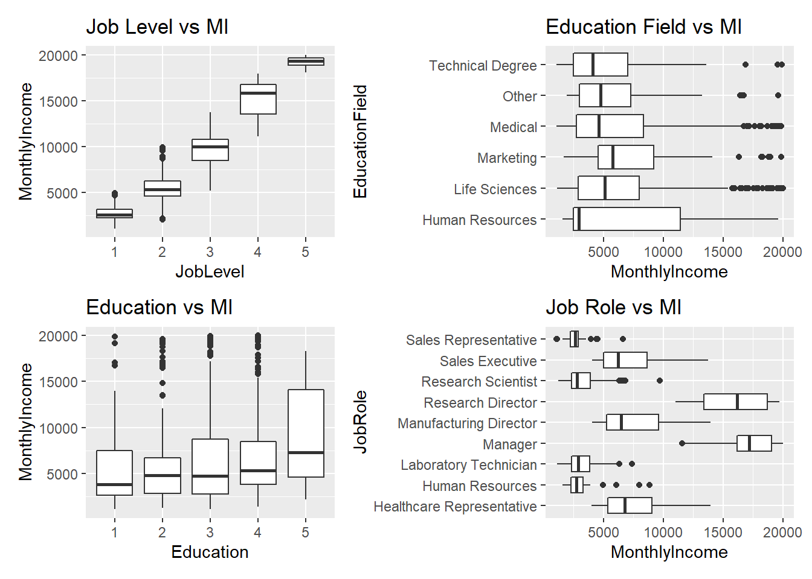
#grid.arrange(JLS_plot, ES_plot, JRS_plot, EFS_plot)# there is a possibility that total years worked and years at company could be colinear and we do not want that
#Continous variable EDA
#data %>% select(Age,DailyRate, DistanceFromHome, HourlyRate, MonthlyRate, NumCompaniesWorked, PercentSalaryHike, MonthlyIncome) %>% ggpairs(upper = list(continuous="smooth", combo="box", discrete = "facetbar"), lower=list(continuous="smooth", combo="box", discrete = "facetbar"))
# Age has a positive correlation
AgS_plot <- data %>% ggplot(aes(Age,MonthlyIncome))+geom_point()+geom_smooth(method="lm")+labs(title = "Age vs Monthly Income")
#data %>% select(StockOptionLevel, TotalWorkingYears, TrainingTimesLastYear, YearsSinceLastPromotion, YearsInCurrentRole, YearsWithCurrManager, YearsAtCompany, MonthlyIncome) %>% ggpairs(upper = list(continuous="smooth", combo="box", discrete = "facetbar"), lower=list(continuous="smooth", combo="box", discrete = "facetbar"))
#TotalWorking Years and YearsatCompany have a strong correlation
#Years SinceLastPromotion, InCurrentRole and WithCurrManager have weak positive correlation
TWYS_plot <- data %>% ggplot(aes(TotalWorkingYears,MonthlyIncome))+geom_point()+geom_smooth(method="lm")+labs(title = "TotalWorkingYears vs Monthly Income")
YaCS_plot <- data %>% ggplot(aes(YearsAtCompany,MonthlyIncome))+geom_point()+geom_smooth(method="lm")+labs(title = "YearsAtCompany vs Monthly Income")
grid.arrange(AgS_plot,TWYS_plot, YaCS_plot)## `geom_smooth()` using formula 'y ~ x'
## `geom_smooth()` using formula 'y ~ x'
## `geom_smooth()` using formula 'y ~ x'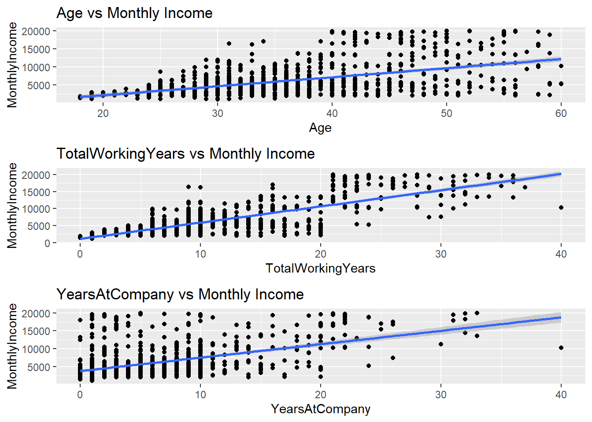
corr_data <- data %>% select(Age, TotalWorkingYears, YearsAtCompany, YearsSinceLastPromotion, YearsInCurrentRole, YearsWithCurrManager, MonthlyIncome)
corr <- round(cor(corr_data),1)
ggcorrplot(corr, hc.order = TRUE,
type = "lower",
lab = TRUE,
lab_size = 3,
method="circle",
colors = c("red", "white", "springgreen3"),
title="Correlogram of Continuous Variables",
ggtheme=theme_bw)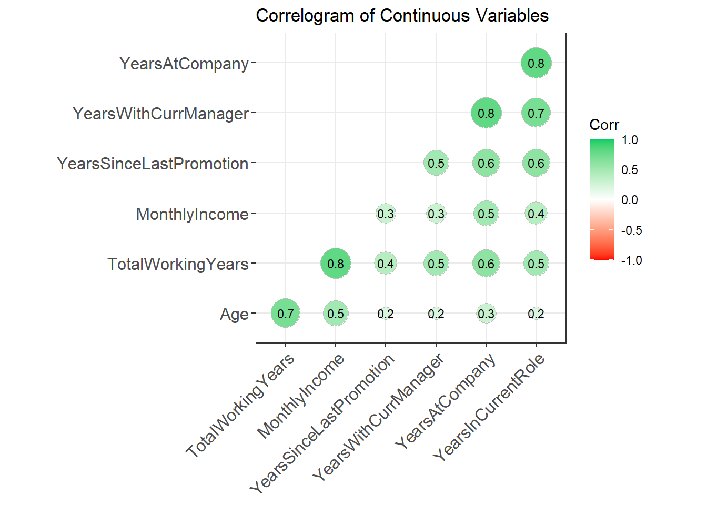
Salary_train <- data %>% select(MonthlyIncome, TotalWorkingYears, JobLevel)
fit <- lm(MonthlyIncome~TotalWorkingYears+JobLevel, data=Salary_train)
summary(fit)##
## Call:
## lm(formula = MonthlyIncome ~ TotalWorkingYears + JobLevel, data = Salary_train)
##
## Residuals:
## Min 1Q Median 3Q Max
## -4957.9 -657.8 -134.6 618.2 4525.8
##
## Coefficients:
## Estimate Std. Error t value Pr(>|t|)
## (Intercept) 2544.901 89.085 28.567 < 2e-16 ***
## TotalWorkingYears 33.442 9.426 3.548 0.000409 ***
## JobLevel2 2652.205 107.666 24.634 < 2e-16 ***
## JobLevel3 6820.371 152.732 44.656 < 2e-16 ***
## JobLevel4 11858.212 254.564 46.582 < 2e-16 ***
## JobLevel5 15800.546 289.997 54.485 < 2e-16 ***
## ---
## Signif. codes: 0 '***' 0.001 '**' 0.01 '*' 0.05 '.' 0.1 ' ' 1
##
## Residual standard error: 1256 on 864 degrees of freedom
## Multiple R-squared: 0.9258, Adjusted R-squared: 0.9254
## F-statistic: 2157 on 5 and 864 DF, p-value: < 2.2e-16#confint(fit)
train(MonthlyIncome~TotalWorkingYears+JobLevel, method="lm",data=Salary_train, trControl = trainControl(method = "LOOCV"))## Linear Regression
##
## 870 samples
## 2 predictor
##
## No pre-processing
## Resampling: Leave-One-Out Cross-Validation
## Summary of sample sizes: 869, 869, 869, 869, 869, 869, ...
## Resampling results:
##
## RMSE Rsquared MAE
## 1261.666 0.9246115 915.7436
##
## Tuning parameter 'intercept' was held constant at a value of TRUEgrid.arrange(TWYS_plot, JLS_plot)## `geom_smooth()` using formula 'y ~ x'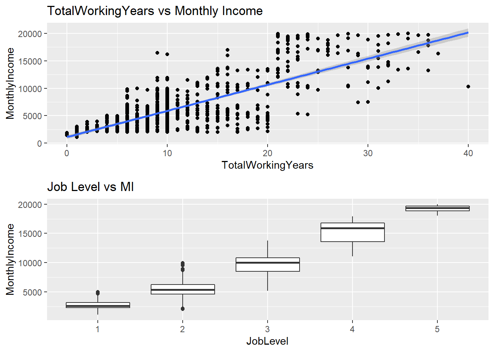
pred_sal = data.frame(MonthlyIncome = predict(fit, newdata = Comp_sal))
sal_comp <-bind_cols(Comp_sal, pred_sal)
#summary(sal_comp)
#write.csv(select(sal_comp,ID,MonthlyIncome), file="Case2Predictions_Scott_Salary.csv")